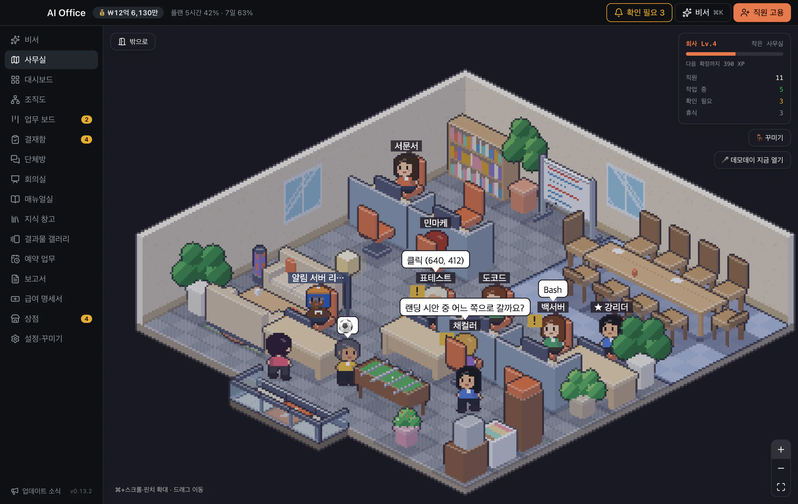
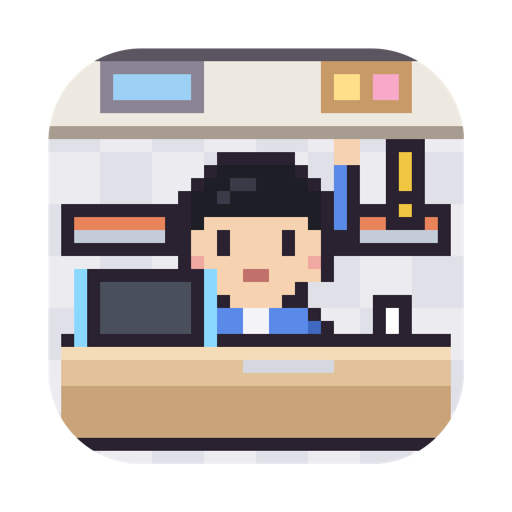
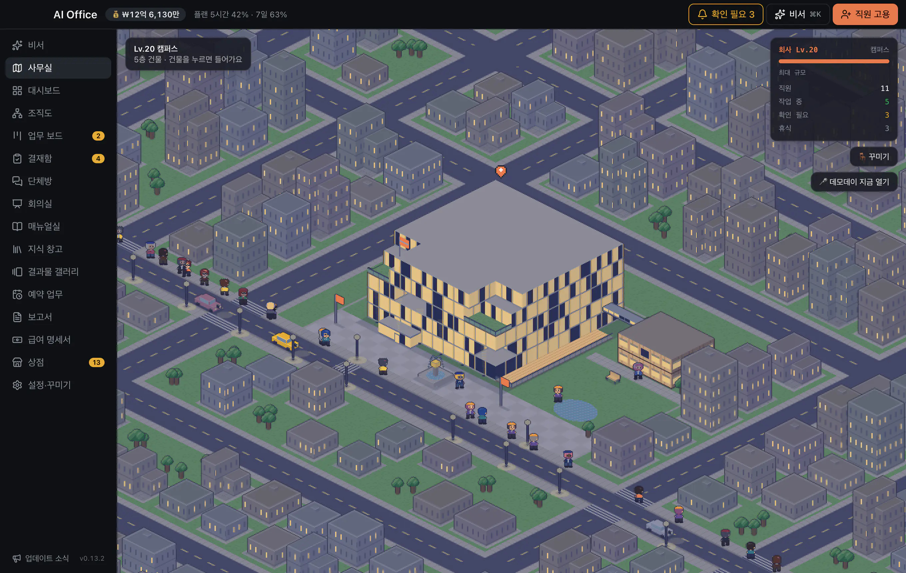

세 안 모두 불투명도 100%(반투명 없음) — GIF는 256색이라 반투명 상자가 움직이는 장면 위에서 프레임마다 다르게 디더링돼 지글거립니다. 왼쪽: 밝은 장면(실내·낮) / 오른쪽: 어두운 장면(외관·밤 — 밝기를 낮춰 흉내 냄). 주황 점선 = 마케팅 편집 시 비워 둘 구역(앱 내보내기는 워터마크가 위에 그려져 상관없음).
밝은 장면 — 실내 Lv.4
어두운 장면 — 외관 밤 (Lv.20)
A안★ 추천단색 불투명 상자
오른쪽 아래 고정
높이 W×3.75%
불투명도 100%
색 5개 + 아이콘


AI Officeengchoon.github.io/ai-office밝은 바닥 위에서도 어두운 상자가 경계를 만들어 줘 글자 대비 15:1 이상 유지

AI Officeengchoon.github.io/ai-office
어두운 장면에선 테두리(#2A2E3A) 한 줄로 상자 윤곽이 보임
B안하단 띠
장면 아래 별도 띠
높이 W×5%
불투명도 100%
장면을 안 가림
AI Office — AI 직원들이 일하는 사무실engchoon.github.io/ai-office
어느 장면에서도 똑같이 읽힘 · 띠 만큼 장면이 줄어듦(16:9 유지 시 장면 높이 −5%)
AI Office — AI 직원들이 일하는 사무실engchoon.github.io/ai-office
어두운 장면에선 띠와 장면 경계가 흐려짐 → 위 테두리 1px 필요
C안상자 없는 외곽선 글자
오른쪽 아래 고정
글자 W×1.5%
불투명도 100%
가장 덜 가림
AI Office · engchoon.github.io/ai-office
가장 깔끔하지만 화분·말풍선 같은 복잡한 무늬 위에선 주소가 흐려짐
AI Office · engchoon.github.io/ai-office
960 GIF로 줄이면 외곽선이 1px 아래로 깨져 글자가 뭉개질 수 있음